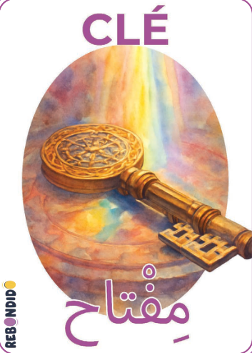
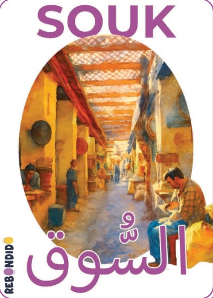
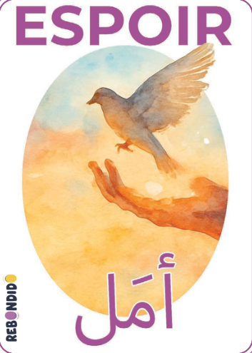

Français
Le Kit Découverte entièrement en français.
Télécharger en français ↓PDF · 27 pages · environ 9 Mo
Un kit prêt à imprimer pour découvrir le plaisir de raconter ensemble. En français ou en version bilingue.

Deux versions du Kit Découverte à télécharger.
Le Kit Découverte entièrement en français.
Télécharger en français ↓PDF · 27 pages · environ 9 Mo
Le Kit Découverte en français et en arabe.
Télécharger FR / AR ↓PDF · 27 pages · environ 9 Mo

À la maison, en classe, en atelier ou entre amis : pioche une carte et ajoute une phrase à l’histoire commune. La personne suivante continue… et tout peut arriver.
Le PDF rassemble les cartes et les supports pour découvrir le jeu, préparer une partie ou accompagner un groupe.
Des mots, verbes, liens, Rebond, cartes REBONDIDO et guides Le Fil. À découper pour faire naître tes histoires.
Les règles, un exemple de partie, quatre variantes et des repères pour accompagner enfants, adolescents et adultes.
Un modèle à découper, plier et coller pour ranger tes cartes après la partie.
Des pistes pédagogiques, une fiche de suivi d’atelier et un petit dictionnaire de l’univers Maroc.
Télécharge le PDF complet. Les cartes, l’étui et le guide d’ateliers sont réunis dans un seul document.
Je télécharge le kit ↓Français / Arabe
+ guide d’ateliers
Une première histoire à créer ensemble.
Du papier A4 standard suffit. Pour des cartes plus solides, choisis un papier de 200 à 350 g/m². La couleur est facultative : on peut aussi jouer en noir et blanc.
Découpe les cartes en suivant les repères. Pour l’étui, ajoute un peu de colle.


Mélange la pioche et joue à tour de rôle. Chacun ajoute une phrase qui reprend sa carte ou applique sa consigne.
Écoute, imagine, passe la main. Les cartes guides restent à côté de la pioche pour accompagner le récit si tu le souhaites.
Choisir ma façon de jouer →
Choisis selon le groupe, son envie et le temps disponible.
Oui, il est offert pour un usage pédagogique, personnel, associatif et non commercial. Tu peux le partager dans son intégralité, sans modification. Pour un usage professionnel ou commercial, contacte-nous.
Le kit indique que les pages 1 à 17 suffisent pour jouer en famille. Pour préparer ou animer un atelier, le document complet comprend aussi des variantes, des fiches pédagogiques et des outils de suivi.
Non. Un papier A4 standard suffit et Tu peux imprimer en noir et blanc. Un papier de 200 à 350 g/m² rend les cartes plus solides. Tu peux aussi les plastifier pour les utiliser plus longtemps.
Le kit est conçu de 7 à 117 ans, pour 2 à 30 joueurs. Avec les plus jeunes, privilégie l’oral, commence par les cartes illustrées et aide à formuler si nécessaire.
Non. Télécharge la version française pour jouer en français, ou la version bilingue pour disposer des textes en français et en arabe. Pas besoin d’écrire ni d’être un grand conteur pour commencer : une carte, une idée, une phrase.
Oui, pour un usage pédagogique, associatif et non commercial. Le guide contient des repères d’animation et des fiches pédagogiques. Pour une prestation rémunérée ou un usage professionnel, écris à contact@rebondido.com.
Le Kit Découverte permet une première expérience avec 48 cartes à imprimer. Le jeu complet REBONDIDO comprend 150 cartes narratives pour varier les histoires. La démo du jeu présente son principe et plusieurs façons de jouer.
Une question sur le jeu, une envie d’atelier ou un projet pour faire raconter tes publics ? Échangeons.